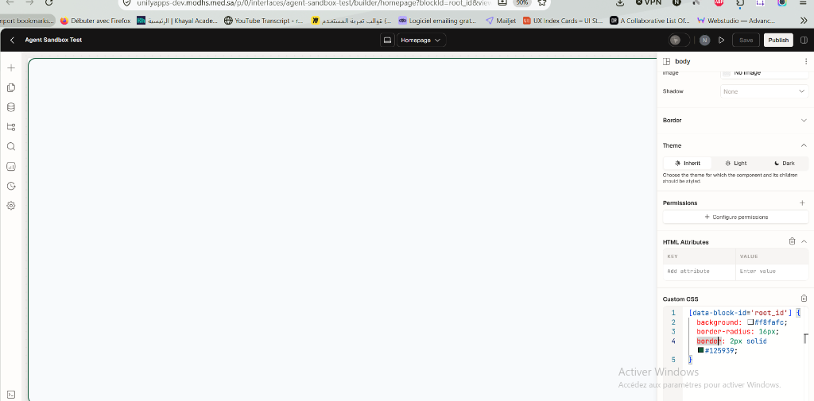
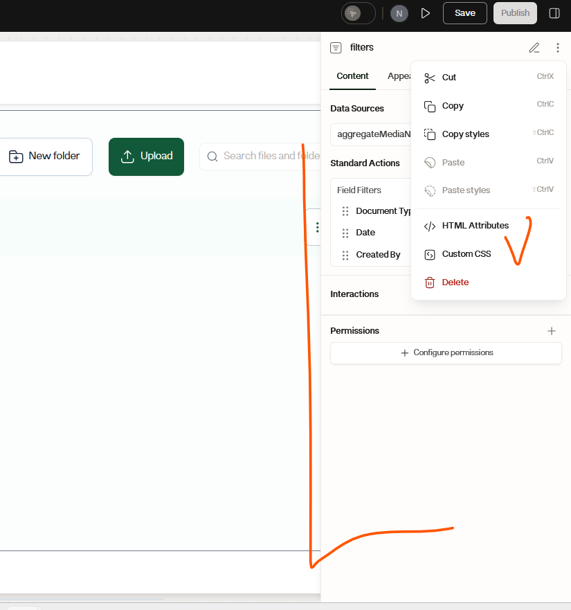
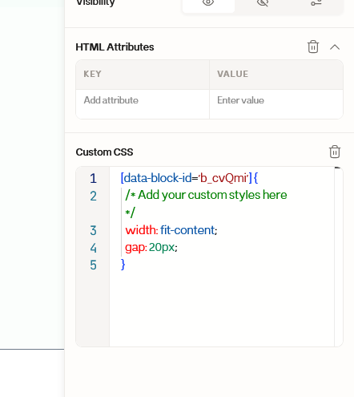
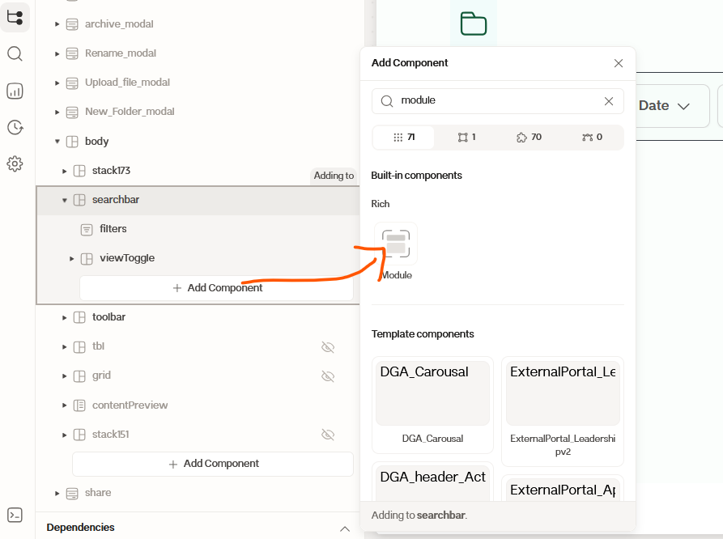

A complete walkthrough illustrated with real screenshots captured from the live UnifyApps tenant (unifyapps-dev.modhs.med.sa). Learn how to set up each integration layer, verify block-scoped custom CSS, and execute workflows from external AI tools like Antigravity and Manus.
Direct captures from the live session demonstrating surgical block scoping and component properties.
App: agent-sandbox-test | Block: [data-block-id='root_id']

#125939) and 16px radius without distorting headers, buttons, or page menus.
HTML Attributes (Key/Value table) and Custom CSS (Monaco Editor) per component.
Accessing HTML Attributes and Custom CSS

filters) opens the menu containing HTML Attributes and Custom CSS.
Enforcing [data-block-id='...']

[data-block-id='b_cvQmi'], proving our mathematical isolation guarantee.
Cross-App Component Distribution

DGA_Carousal, DGA_header_Act) can be dropped into any app.
Exact platform paths, form fields, and configuration steps.
Antigravity-Agent-Bridge.interfaces, connectors, workflows.6aeaedcf41af9153531ebb1f).Antigravity-Unify-MCP.Antigravity-Unify-A2A.e_69b267ec5725553d7a82c3ed).Configuring JSON-RPC 2.0 stdio execution for local and cloud agent runtimes.
In Manus, the agent clones your GitHub repository https://github.com/Naiimbs/unifyapps-agentic-controller into its Linux environment. The updated unifyapps_bridge.js now implements the full JSON-RPC 2.0 stdio protocol.
node /home/ubuntu/unifyapps_bridge.js
Add the connector configuration to your Antigravity MCP settings:
Connecting cloud AI agents without requiring local node process execution.
You deployed this project to https://unifyapps-agentic-controller.mhaf.cloud. The updated unifyapps_bridge.js supports remote execution via --http:
https://unifyapps-agentic-controller.mhaf.cloud/mcp. Manus can call tools over HTTPS without needing local files!